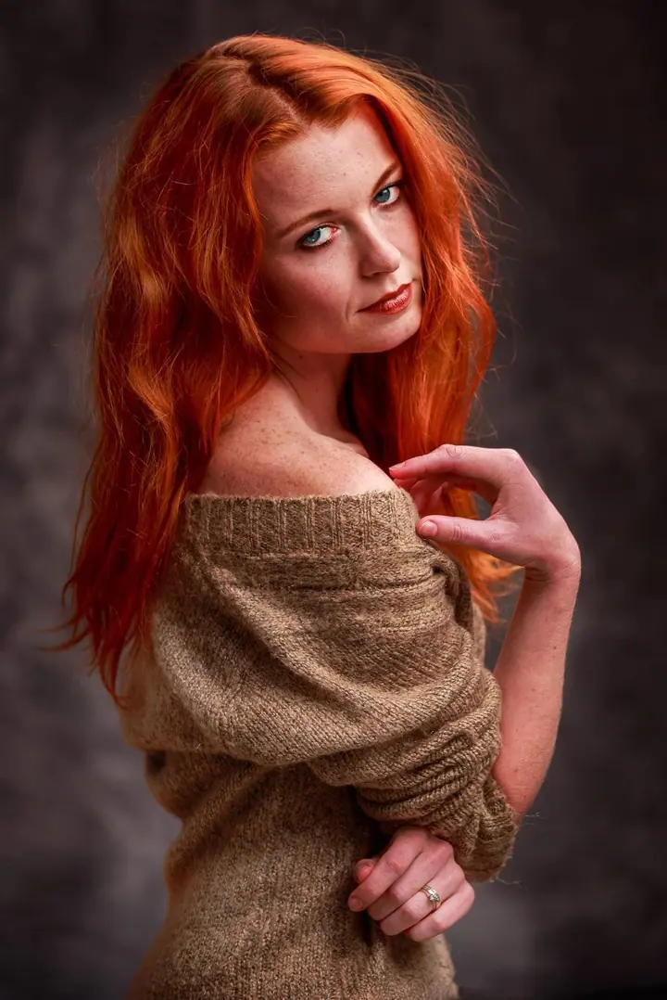
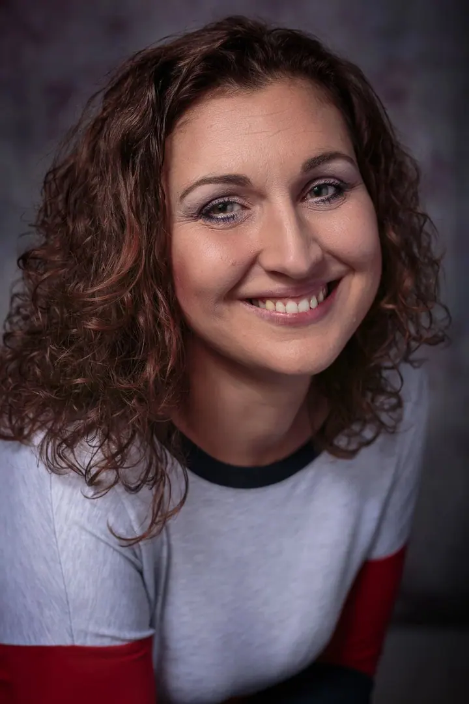
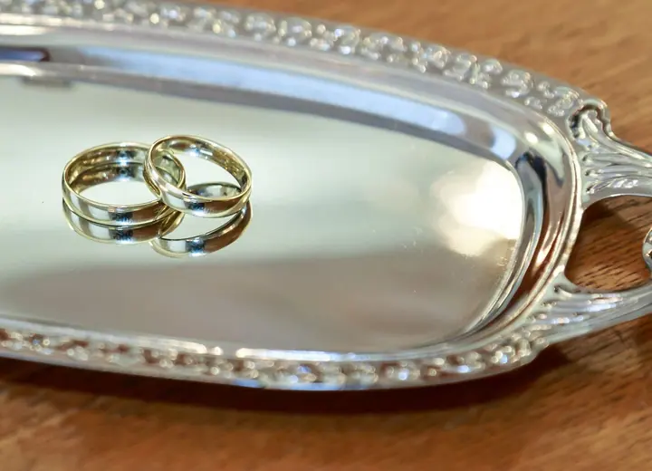

Portréty
Originální a profesionálně nafocený portrét váš nebo celé rodiny. Fotím u sebe v ateliéru, v exteriéru nebo třeba na vašem zámku.





Jmenuji se Tomáš Fencl a fotografuji už víc než třicet let, většinu svého života. Věnuji se především portrétům soukromým i firemním, v ateliéru, v exteriéru i přímo u vás. Rád fotím také svatby, od samotného obřadu až po celý svatební den.
Více o mně
„Svatební focení je pro mne vždy pocit jak jízda na tobogánu.“
— Tomáš Fencl
Originální a profesionálně nafocený portrét váš nebo celé rodiny. Fotím u sebe v ateliéru, v exteriéru nebo třeba na vašem zámku.
Od jednoduchého nafocení obřadu a svatebních hostů až po kompletní svatební den. Zachytím formální okamžiky, detaily i celkovou atmosféru.
Fotím business portréty jednotlivců i skupin pro prezentace, vizitky i výroční zprávy. Firemní prezentace si zaslouží kvalitní fotografie.
Otevíráte výstavu, pořádáte koncert nebo vánoční večírek? Po dohodě zajistím profesionální fotografickou dokumentaci firemních i kulturních akcí.
V deseti letech jsem dostal od táty svůj první kinofilmový fotoaparát a mám ho dodnes. Po dědovi jsem zdědil fotokomoru, kde jsem jako student míchal vývojky s často mlhavými výsledky. Dnes fotím plně digitálně, ale pořád se i na počítači věnuji vyvolání každé fotky, aby byla krásná.
Dlouho jsem fotil amatérsky, hlavně rodinu a cesty do hor i cizích zemí. K lepšímu focení mě nakonec postrčily vlastní děti, zapsal jsem se do večerních kurzů a díky podpoře své ženy jsem se rozhodl fotit profesionálně. Přes hokejbalové zápasy a soutěže v orientálních tancích jsem doputoval k portrétu. Myslel jsem si, že práce v ateliéru je nudná, a mýlil jsem se: snaha zachytit výraz člověka je pro mě pokaždé nové dobrodružství.
Svatby fotím tak, aby na fotkách byly všechny důležité události, ale hlavně nálada a pocity. Moje vlastní svatební album je pro nás se ženou pořád zdrojem krásných vzpomínek a přeji vám totéž. A protože je mé introvertní duši blízká atmosféra malých komorních akcí, nejraději z reportáží fotím klubové koncerty.
Napište mi SMS nebo e-mail, ozvu se vám zpět. Probereme, jaké fotky potřebujete a kde budeme fotit.
U svatby spolu pečlivě domluvíme rozsah a časový plán, zda začneme přípravami, nebo až obřadem. U portrétu vybereme ateliér, exteriér nebo vaše prostředí.
Při focení se soustředím na vás a váš výraz. Na svatbě fotím reportážně obřad, skupinové fotky i drobné detaily dne.
Pošlu vám fotky k výběru a každou vybranou fotku pečlivě vyvolám na počítači, aby byla krásná.
Portréty začínají od 1 500 Kč, svatební focení od 4 500 Kč. Výsledná cena se odvíjí od rozsahu a časového plánu, který spolu domluvíme.
U sebe v ateliéru, v exteriéru nebo přímo u vás, třeba ve firmě nebo na vašem zámku. Fotím jednotlivce, páry i celé rodiny.
Nemusíte. Nafotím jen obřad a svatební hosty, nebo vás budu provázet celým dnem od příprav až po oslavu. Záleží na vás.
Nejlépe SMS na 602 280 407 nebo e-mailem. Často fotím nebo pracuji a ne vždy mohu telefon zvednout, ale vždy vám zavolám zpět.